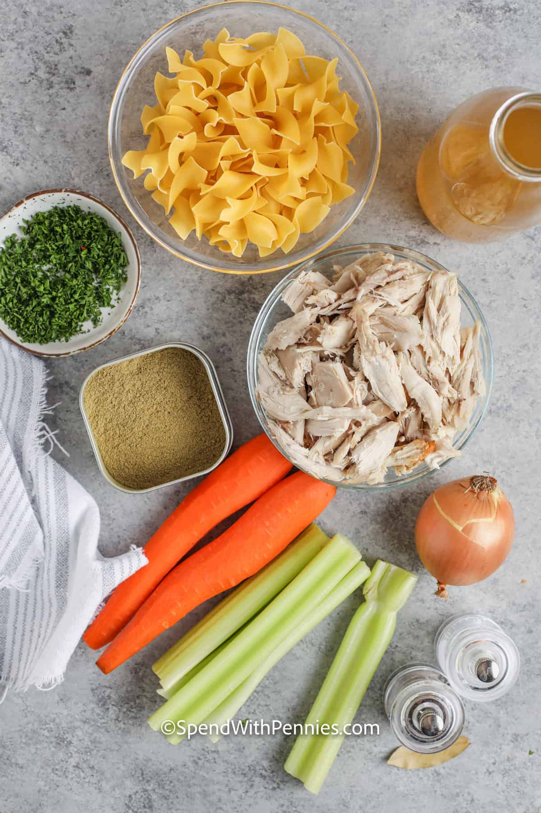

Home
Chicken Noodle Soup
A classic soup recipe that the family will love! This is a chicken noodle soup
recipe thats super easy to make when you don't have time to make your soup from
scratch.

Ingredients
- 1/2 cup onion, chopped
- 1/2 cup celery, chopped
- 4 (14.5 ounce) cans chicken broth
- 1 (14.5 ounce) can vegetable broth
- 1/2 pound chopped, cooked chicken breast
- 1 1/2 cups of Noodles (Preferably egg noodles, but rotini or fusilli are fine substiutes)
- 1 cup sliced carrots
- 1/2 teaspoon dried basil
- 1/2 teaspoon dried oregano
- salt and ground black pepper to taste

Steps
- Melt butter in a large pot over medium heat. Add onion and celery and cook until
just tender.
- Add chicken broth, vegetable broth, chicken, noodles, carrots, basil, oregano, salt,
and pepper. Stir to combine and bring to a boil.
- Reduce heat and simmer for 20 minutes.
- Enjoy!